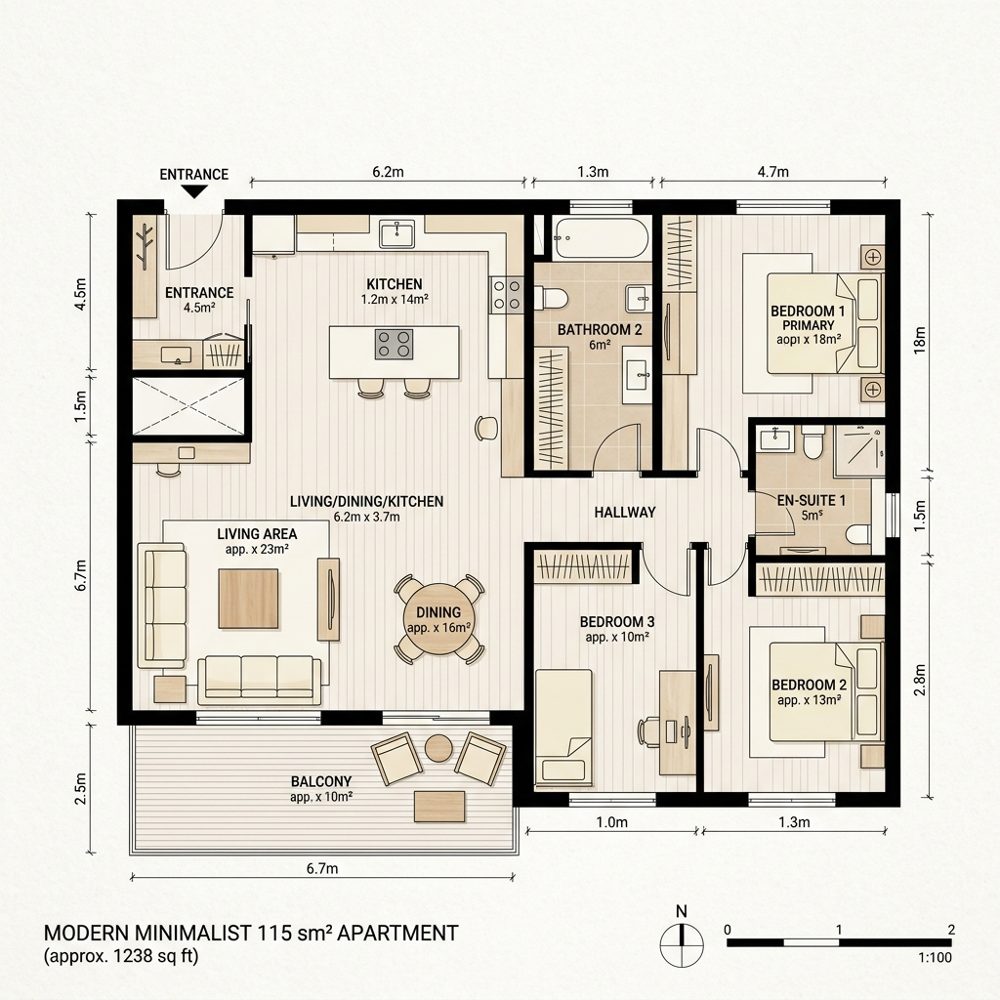

⬅ 返回方案主页
115m²
全屋空间布局与装修设计方案 (极简暖奶油风)
本设计方案为您的 115㎡ 户型量身定制，风格定位于
“极简暖奶油风” (Warm Minimalism / Minimalist Creamy
Style)。该风格结合了现代极简的平整线条、隐藏式收纳与奶油原木风的温暖色彩、亲肤材质，既具有极强的科技智能包容性，又能营造温馨、治愈的居家氛围。

115m²
极简暖奶油风概念平面布置图
🎨 整体色彩与材质规划 (Color
& Material)
- 墙面/顶面：
统一使用暖白/可可蛋奶色艺术漆或乳胶漆（如立邦“可可蛋奶”或佐敦“0001”），避免冰冷的纯白色。
- 地面： 选用 750×1500mm
大规格柔光暖灰色瓷砖（无缝铺贴，环氧彩砂填缝），或者温暖原木色人字拼/鱼骨拼地板。
- 柜体板材：
定制柜体门板统一采用肤感膜/无拉手设计（弹弹器或极窄隐形拉手），颜色与墙面同色（色差控制在
5% 以内，实现“柜墙一体”）；内部柜体采用温暖的原木纹理。
🛋️ 核心空间布局与改造建议
1. 玄关与餐厅区
(Entrance & Dining) —— “柜墙一体，化零为整”
- 结构改造：
- 玄关与餐厅是入户的第一视觉点。建议将玄关柜与餐边柜做成一整面一体化定制墙柜，长度约
4-5 米，直通餐厅区域。
- 细节设计：
- 玄关段： 底部留空 15-20cm（常鞋位，内藏 3000K
暖色感应灯带）；中间留空一个长方形木质壁龛（放置钥匙、包包，预留插座）。
- 隐藏弱电箱：
弱电箱藏于玄关柜最底部的柜格内，柜门做百叶散热处理。
- 餐边柜段： 中间预留 85cm
高度的水吧台区，台面采用白色岩板或石英石，背景为原木色格栅或大板，预留轨道插座，放置咖啡机、饮水机。
- 餐桌摆放： 选择 1.6 米 - 1.8
米的暖白色岩板或实木餐桌，侧边与餐边柜平齐摆放，留出宽敞 of
走道空间。
2.
客厅与阳台区 (Living Room & Balcony) —— “大起居空间，通透无界”
- 结构改造（强烈推荐）：
- 阳台打通：
拆除客厅与封闭阳台之间的推拉门，将阳台直接并入客厅，垭口处做大弧度圆角过渡。这能让客厅的视觉进深瞬间增大，光线更通透。
- 电视背景墙：
- 不做复杂的岩板格栅。采用悬浮木饰面墙板或直接做平整乳胶漆墙面。
- 电视机做嵌入式（等离子/超薄壁画电视壁挂），使电视表面与墙面完全齐平。
- 下方做一个悬空原木色电视柜（离地
20cm），内部隐藏所有排插、机顶盒和智能中枢网关。
- 家具配置：
- 沙发选用
直排型布艺/磨砂绒大沙发（颜色为米白或浅燕麦色），不买笨重的贵妃椅。
- 搭配一个圆形原木茶几或几何造型的微水泥茶几。
- 阳台区功能划分：
- 阳台左侧定制通顶家政柜（隐藏洗衣机、烘干机，上方收纳清洁工具）。
- 阳台右侧可作为一个休闲角，摆放一株琴叶榕或天堂鸟绿植，配一张单人休闲椅。
3. 厨房区 (Kitchen) ——
“高效中西厨，通透采光”
- 门洞设计：
- 厨房门使用三联动极窄白色/黑色边框超白长虹玻璃推拉门。平时可以完全推开叠在一侧，形成半开放式厨房的感觉，采光极佳。
- 橱柜设计：
- 采用 L
型布局。高柜（嵌入蒸烤箱、双门冰箱）做在入口一侧。
- 地柜统一用原木色，吊柜用肤感暖白色。台面使用纯白色石英石。
- 在吊柜下方必须安装手扫感应 LED
灯带，保证切菜区无阴影。
4. 主卧套间
(Master Bedroom) —— “五星级酒店的慵懒与舒适”
- 背景墙设计：
- 床头背景墙做半墙硬包或悬浮背景墙板（内藏向上发光的温暖
LED 灯带）。
- 床头两侧不放笨重的床头柜，改用悬空木质隔板或小巧的圆形木几。
- 衣帽间（Locker Room）：
- 采用 一字型双侧排柜 或 L
型柜。如果怕落灰，柜门可选用茶色半透明玻璃门（内置感应灯），或者统一用温暖白色的无拉手肤感门板。
- 灯光氛围：
- 卧室无主灯。天花板四周做双下发光反光灯槽（磁吸轨道灯/线性灯），营造极度解压的睡眠氛围。
5. 卫生间 (Bathrooms) ——
“微水泥质感，极简好打理”
- 马桶与浴室柜：
- 均采用墙排（壁挂马桶 +
悬空浴室柜），地面无死死角，打扫卫生极其轻松。
- 瓷砖与洁具：
- 墙地一体铺贴 600×1200mm
暖灰色/浅米色哑光瓷砖，营造类似微水泥的无缝高级感。
- 水龙头、花洒和五金件选用哑光枪灰色或白色烤漆件，比传统的电镀亮面更契合奶油风的内敛。